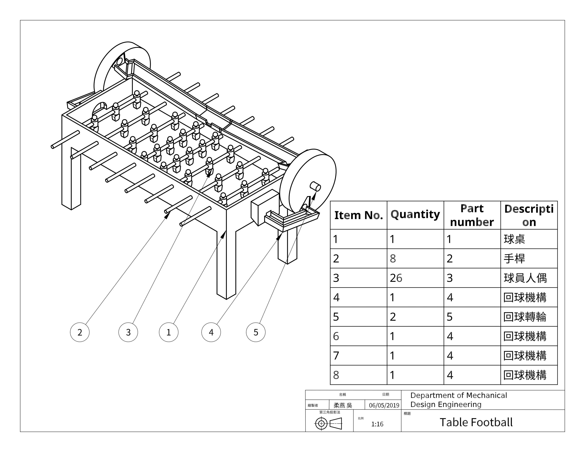
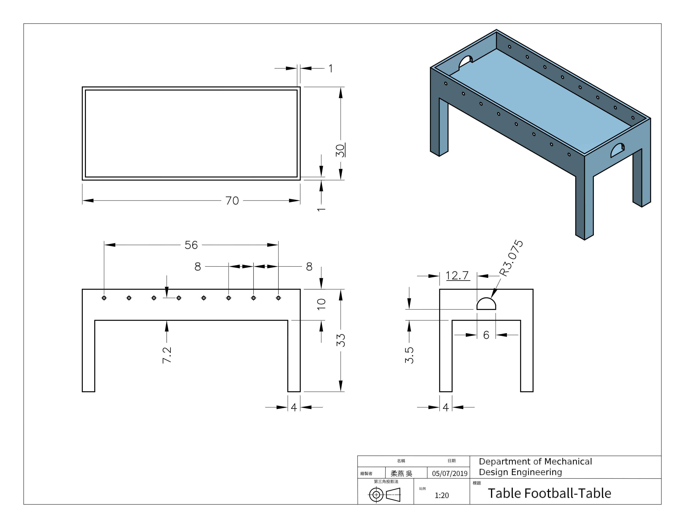
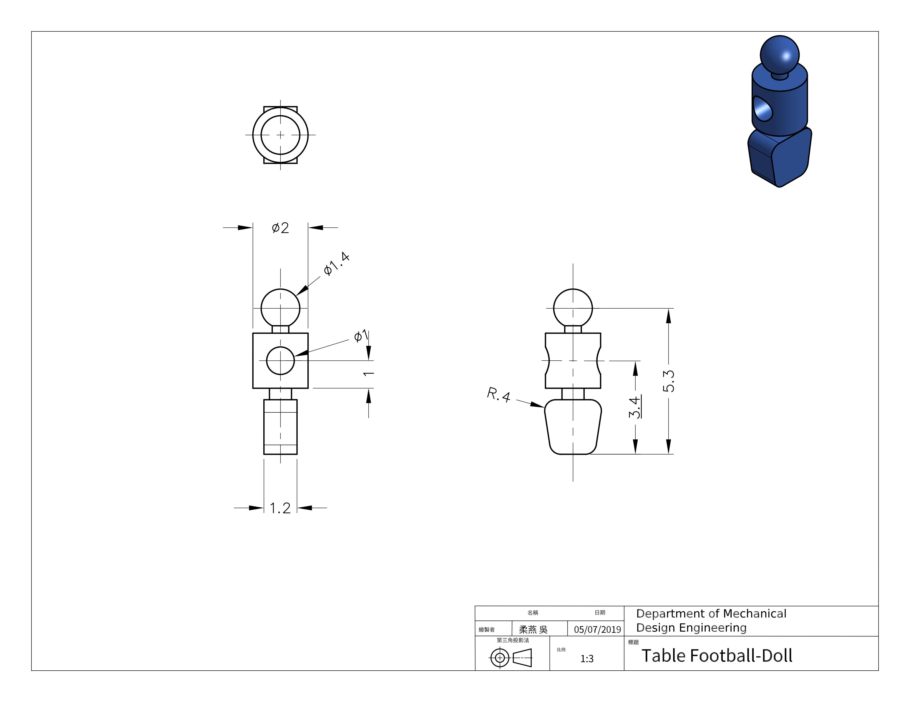
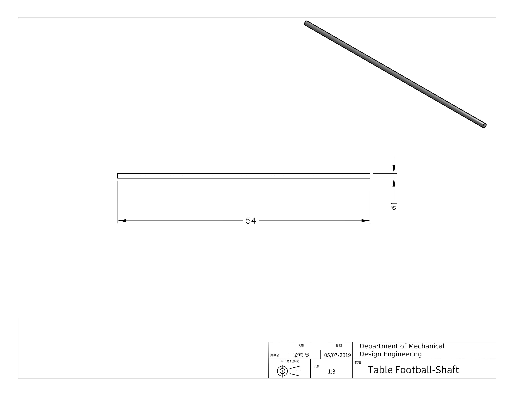
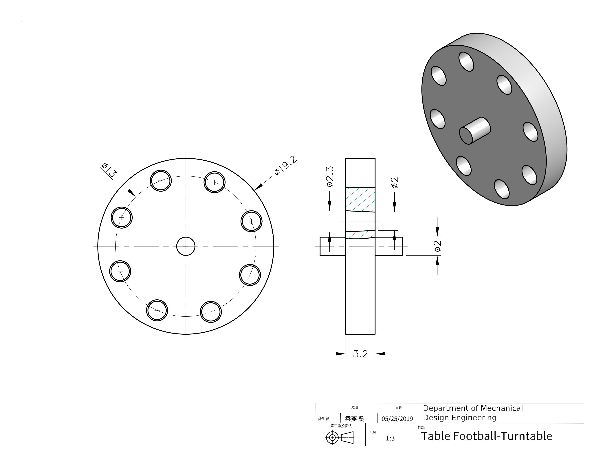
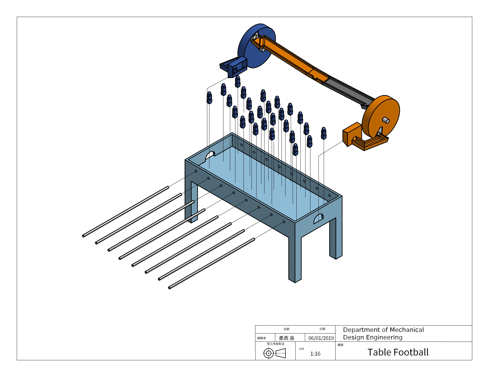

參數設計與繪圖 << Previous Next >> V-rep 動態模擬
參數設計與繪圖 << Previous Next >> V-rep 動態模擬
細部設計與 BOM
完成手足球零組件細部設計 (可參考 https://youtu.be/PgnvZV5s13c 中各項設計), 並將設計 BOM (Bill of Materials) 納入 CMSimfly 網際內容管理系統. (系統 BOM 文件整理)
手足球 DIY 影片:
參考資料:
https://www.matterhackers.com/articles/how-to-build-a-foosball-table
https://www.matterhackers.com/store/digital-designs/foosball-table-parts
手足球零件格式說明
手足球零件格式說明
零件 BOM
手足球零組件材料表 (含零組件下載連結)

零件尺寸圖
零件尺寸圖
球桌

球員

手桿

運球轉輪

運球機構

零件部分組裝圖
零件部分組裝圖
3D 零組件爆炸圖
3D 零組件爆炸圖

參數設計與繪圖 << Previous Next >> V-rep 動態模擬